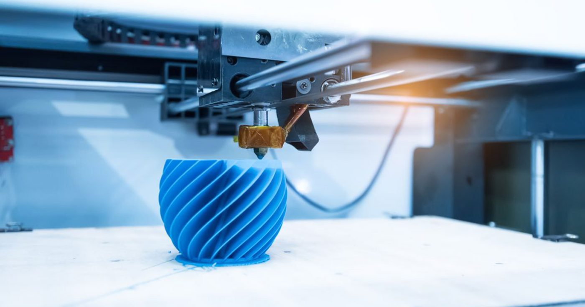
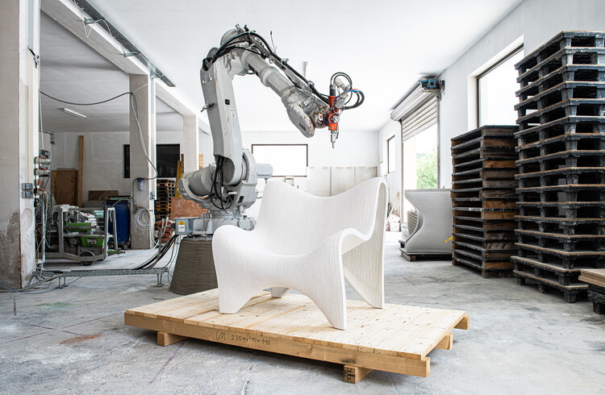

-

LAS MEJORES IMPRESORAS 3D DE 2024
Si te preguntas cuáles son las mejores impresoras 3d de 2024 podemos recomendarte diferentes impresoras 3D en clasificadas por su tipo de tecnología, categoría, precios y características.
Seguir leyendo... -

MUEBLES CREADOS POR IMPRESION 3D
Fusionar la estética con la función nunca es sencillo, y Slicelab sabía lo que quería: que este sillón tuviera un perfil orgánico e interesante que no solo lo diferenciara de los muebles tradicionales, sino que también lo diferenciara de otros sillones impresos en 3D que circulan en el mercado.
Seguir leyendo... -
LA IMPRESION 3D EN EDUCACION.
El uso de impresoras 3D en educación ofrece gran potencial para alumnos y profesores. En UNIR abordamos algunas de las ventajas de su uso en las aulas.
Seguir leyendo...